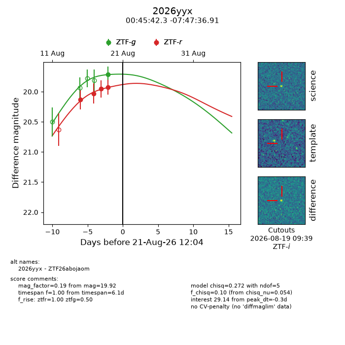
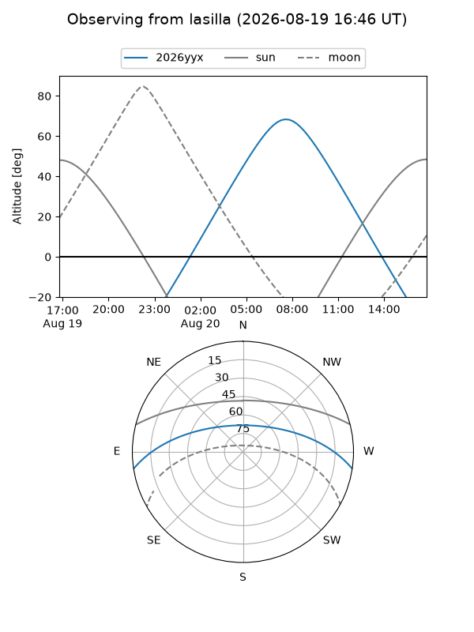
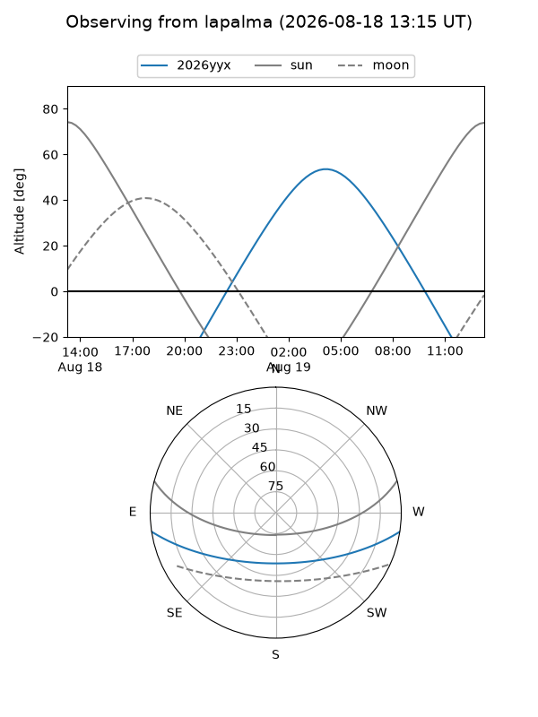
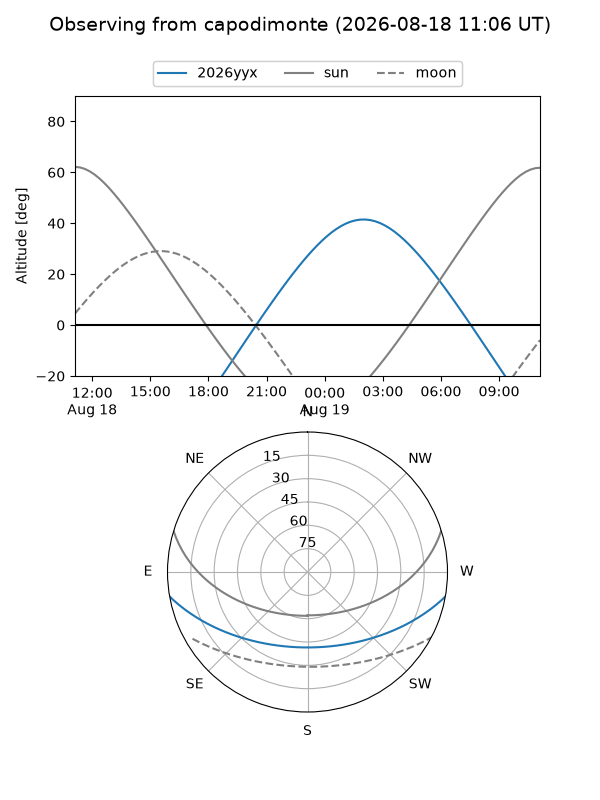
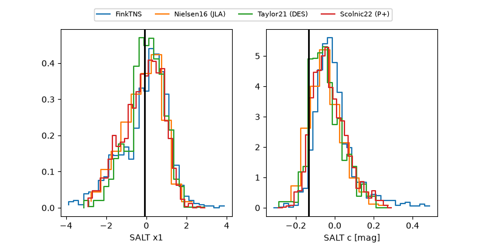

2026yyx
Target 2026yyx at 2026-08-21 12:07
Aliases and brokers:
FINK-ZTF: ztf.fink-portal.org/ZTF26abojaom
Lasair-ZTF: lasair-ztf.lsst.ac.uk/objects/ZTF26abojaom
ALeRCE-ZTF: alerce.online/object/ZTF26abojaom
YSE-PZ: ziggy.ucolick.org/yse/transient_detail/2026yyx
TNS name: wis-tns.org/object/2026yyx
Direct TNS query: direct search
alt names
ZTF26abojaom (ztf,fink_ztf)
2026yyx (tns,yse)
Coordinates:
equatorial (ra, dec) = 11.4263,-7.79359
equatorial (HMS+DMS) = 00:45:42.30,-07:47:36.91
galactic (l, b) = (118.6496,-70.61765)
Flags:
TNS type: nan
peak dt: -0.3
Photometry:
last ztfg=19.71, ztfr=19.92
1 ztfg, 4 ztfr detections
Lightcurve

Visibility



Additional plots
